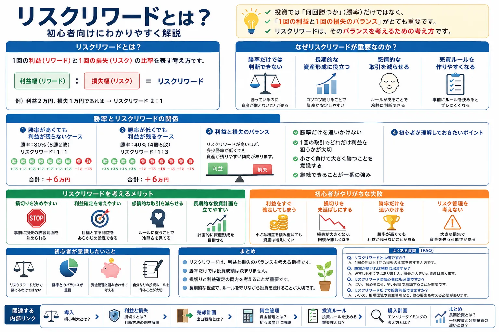

Introduction
勝率だけで投資成績は決まらない
投資初心者は「何％勝てるか」に注目しがちです。しかし実際には、1回勝ったときにどれだけ利益が出るのか、1回負けたときにどれだけ損失が出るのかによって、長期的な結果は大きく変わります。
- 勝率が高くても、損失が大きいと資産は増えにくい場合があります。
- 勝率が低くても、利益が損失より大きければ成績が残る場合があります。
- この「利益と損失のバランス」を考える入口がリスクリワードです。
損失を小さく、利益を大きくする考え方は、損小利大とは？でも重要なテーマです。リスクリワードは、その考え方を具体的な売買ルールに落とし込むときに役立ちます。
Basic
リスクリワードとは？
リスクリワードとは、1回の取引で想定する損失額と利益額の比率を考える指標です。投資やFX、短期売買などでよく使われる考え方で、利益と損失のバランスを見ることが目的です。
Risk
どこまで損失を許容するか
購入価格からどこまで下がったら損切りするかを考えます。これは、感情で耐えるためではなく、事前に損失の上限を決めるためです。
Reward
どこまで利益を狙うか
どこで利益確定を考えるかを決めます。上がったら何となく売るのではなく、目標や出口を先に整理する考え方です。
Balance
損失と利益を比べる
損失1に対して利益2を狙うなら、リスク1：リワード2というように整理できます。細かい数式より、まずは考え方を理解しましょう。
例：損失の目安 1万円 ／ 利益の目安 2万円 → リスク1：リワード2
Why Important
なぜリスクリワードが重要なのか？
リスクリワードを考えると、勝率だけでは見えない投資成績の中身を確認しやすくなります。特に、損切りや利益確定をその場の感情で決めてしまう人ほど、事前に比率を整理しておく意味があります。
勝率だけでは判断できない
10回中7回勝っても、負けた3回の損失が大きければ、全体ではマイナスになることがあります。
長期的な資産形成に役立つ
1回ごとの結果に振り回されず、複数回の取引を通じてどう資金を守るかを考えやすくなります。
感情的な取引を減らせる
損失が出たときに耐え続ける、少し利益が出たらすぐ売る、といった感情的な判断を減らしやすくなります。
売買ルールを作りやすくなる
どこで買い、どこで売るかを考えるとき、損切り幅と利益目標をセットで決めやすくなります。
Win Rate
勝率とリスクリワードの関係
リスクリワードを理解するうえで大切なのは、勝率とセットで考えることです。勝率だけ、リスクリワードだけ、どちらか一方ではなく、両方のバランスを見ることで投資成績を考えやすくなります。
| ケース | 勝率 | 1回の利益 | 1回の損失 | 10回の結果例 | 見方 |
|---|---|---|---|---|---|
| 勝率は高いが損失が大きい | 70% | +5,000円 | -20,000円 | +35,000円 −60,000円 = -25,000円 | 勝ちが多くても利益が残りにくい |
| 勝率は低いが利益が大きい | 40% | +20,000円 | -8,000円 | +80,000円 −48,000円 = +32,000円 | 勝ちが少なくても利益が残る場合がある |
| バランス型 | 50% | +12,000円 | -8,000円 | +60,000円 −40,000円 = +20,000円 | 勝率と損益幅を両方見る |
※ 横にスクロールできます
勝率が高くても利益が残らないケース
小さな利益を何度も積み上げても、1回の大きな損失でそれまでの利益を失うことがあります。利益確定が早すぎて、損切りが遅い状態は特に注意が必要です。
勝率が低くても利益が残るケース
損失を小さく限定し、利益を伸ばせる場合は、勝率が低くても結果が残ることがあります。ただし、実際には連敗への耐性や資金管理も必要です。
利益と損失のバランス
リスクリワードは「必ず利益を伸ばせばよい」という単純な話ではありません。相場環境、投資期間、商品の値動きに合わせて、現実的なバランスを考える必要があります。
初心者が理解しておきたいポイント
最初は難しい数式よりも、「この取引でどれくらい失う可能性があり、どれくらい利益を狙っているのか」を言葉で説明できる状態を目指すと分かりやすいです。
Merit
リスクリワードを考えるメリット
リスクリワードを考えるメリットは、単に数字を出すことではありません。取引前に損切り、利益確定、資金配分、出口の考え方を整理しやすくなる点にあります。
損切りを決めやすい
どこまで下がったら撤退するかを先に考えるため、含み損を感情で放置しにくくなります。詳しくは損切りとは？判断方法の例を解説も参考になります。
利益確定を考えやすい
上がったら何となく売るのではなく、どの水準で利益確定を考えるかを整理しやすくなります。これは出口戦略とは？の考え方にもつながります。
感情的な取引を減らせる
事前に想定を決めておくことで、焦りや欲に振り回されにくくなります。すべてを機械的に行うというより、判断の基準を持つイメージです。
長期的な投資計画を立てやすい
1回の勝ち負けではなく、資金をどのように守りながら続けるかを考えやすくなります。資金配分は資金管理とは？初心者向けに解説と合わせて考えると整理しやすいです。
Mistake
初心者がやりがちな失敗
リスクリワードを意識しないと、勝っているつもりなのに資金が増えない状態になりやすいです。特に初心者は、次のような行動に注意しましょう。
Mistake 01
利益をすぐ確定してしまう
少し利益が出ると不安になり、早く売ってしまうことがあります。利益を守る意識は大切ですが、毎回利益が小さいと損失をカバーしにくくなります。
Mistake 02
損切りを先延ばしにする
「いつか戻るかもしれない」と考えて損切りを遅らせると、1回の損失が大きくなりやすいです。損失が出たときほど冷静な判断が必要です。
Mistake 03
勝率だけを追いかける
勝率が高い手法に見えても、損失が大きい設計なら安定しません。勝率とリスクリワードはセットで見る必要があります。
Mistake 04
リスク管理を考えない
どれだけ良い考え方でも、1回あたりの投資額が大きすぎると連敗に耐えにくくなります。資金管理を抜きにリスクリワードだけを見るのは危険です。
Beginner Point
初心者が意識したいこと
リスクリワードは大切な考え方ですが、これだけで勝てるわけではありません。勝率、資金管理、相場環境、投資目的と組み合わせて考えることが重要です。
-
リスクリワードだけで判断しない
リスク1：リワード3のように見えても、実際に到達しにくい利益目標であれば現実的ではありません。
-
勝率とのバランスを見る
利益幅を大きく狙うほど勝率が下がる場合もあります。自分の手法や投資期間に合ったバランスを考えましょう。
-
資金管理と組み合わせる
1回の損失を資金全体の中でどこまで許容するかを決めることで、連敗時のダメージを抑えやすくなります。
-
自分なりの投資ルールを作る
買う理由、損切りする理由、利益確定する理由を言葉にしておくと、取引後の振り返りもしやすくなります。詳しくは投資ルールを決める重要性とは？も参考になります。
Entry And Exit
購入計画と売却計画をセットで考える
リスクリワードは、買った後に考えるものではなく、買う前に整理しておく考え方です。どの水準で入るのか、どこで撤退するのか、どこで利益確定を考えるのかをセットにすると、売買の流れが見えやすくなります。
購入前
エントリータイミングの考え方とは？を参考に、なぜその価格で買うのかを整理します。
保有中
価格が動いたときに、最初の想定が崩れていないかを確認します。感情ではなく、事前の条件を見直します。
売却時
利益確定・損切り・保有継続の判断は、出口戦略とは？の考え方とつながります。
Summary
まとめ
リスクリワードは、利益と損失のバランスを考えるための指標です。投資成績は勝率だけでは決まらず、1回の利益と1回の損失の大きさにも大きく影響されます。
- リスクリワードは利益と損失のバランスを見る考え方です。
- 勝率が高くても、損失が大きいと利益は残りにくくなります。
- 損切りと利益確定をセットで考えることが重要です。
- 資金管理や投資ルールと組み合わせて、長期的な視点で続けることが大切です。
短期売買だけでなく、資産形成では長期投資とは？や一括投資と分割投資の違いとは？のように、投資期間や購入方法もあわせて考えると全体像をつかみやすくなります。
FAQ
よくある質問
Q. リスクリワードとは何ですか？
リスクリワードとは、1回の取引で想定する利益と損失のバランスを考える指標です。損失をどこまで許容し、利益をどこまで狙うかを事前に整理するために使います。
Q. 勝率が高ければ利益は出ますか？
勝率が高くても、1回の損失が大きく、1回の利益が小さい場合は利益が残らないことがあります。勝率とリスクリワードはセットで考えることが大切です。
Q. リスクリワードは初心者にも必要ですか？
初心者にも必要です。難しい計算をするためではなく、取引前に損切りと利益確定の目安を考えるために役立ちます。
Q. リスクリワードだけで投資判断できますか？
リスクリワードだけで投資判断するのは不十分です。勝率、資金管理、投資期間、相場環境、銘柄や商品の特徴もあわせて確認しましょう。
Next Learning
リスク管理と出口戦略もセットで学ぶ
リスクリワードは、損切り・利益確定・資金管理とつながる考え方です。1つずつ学ぶことで、感情に左右されにくい投資ルールを作りやすくなります。
ご利用にあたっての注意事項
本記事は情報提供を目的としており、投資の勧誘を目的としたものではありません。株式・投資信託・FX・外国証券等の取引は元本保証がなく、相場変動等により損失が生じる場合があります。取引開始前に、契約締結前交付書面や商品説明書、目論見書等を必ずご確認のうえ、ご自身の判断と責任でお取引ください。